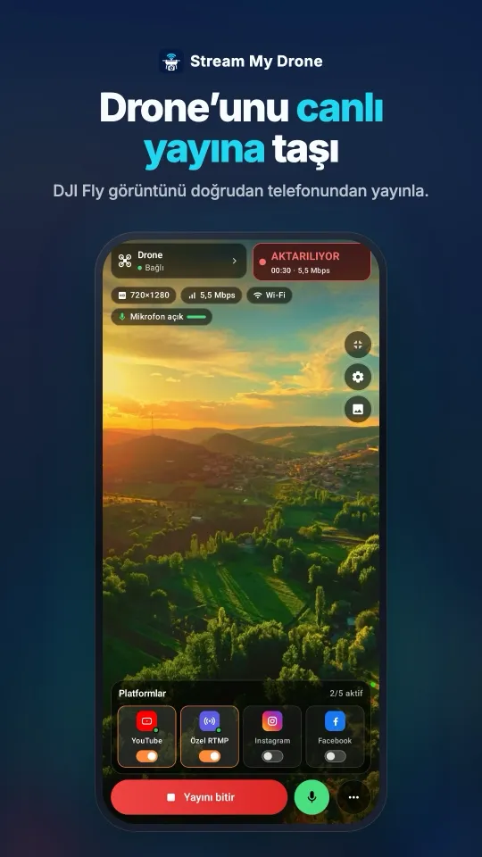
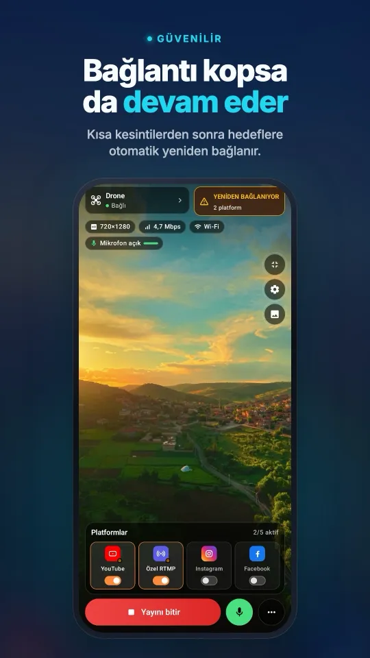
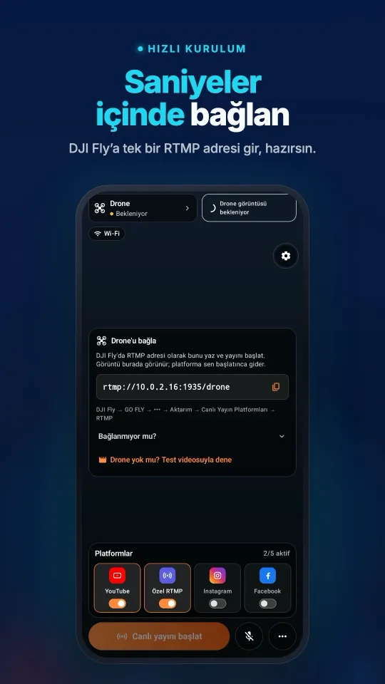
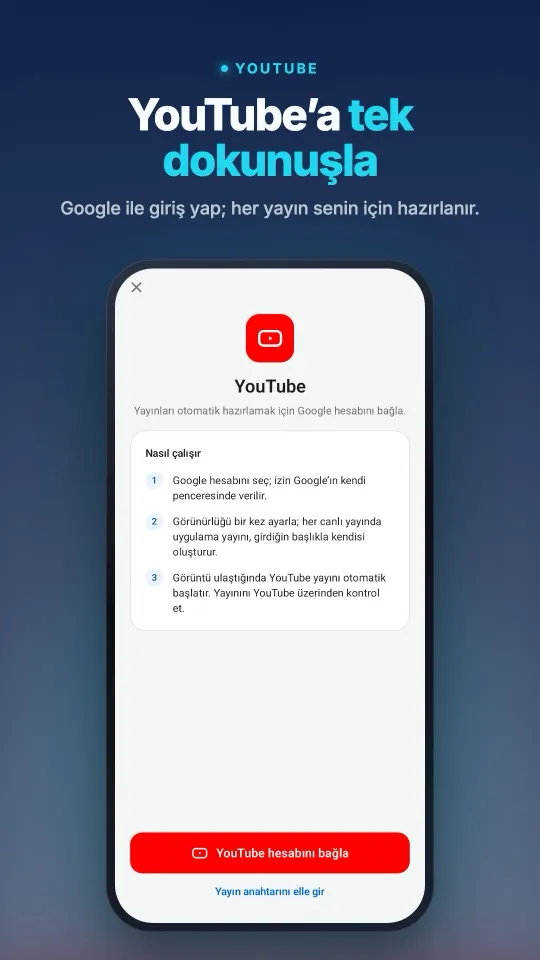
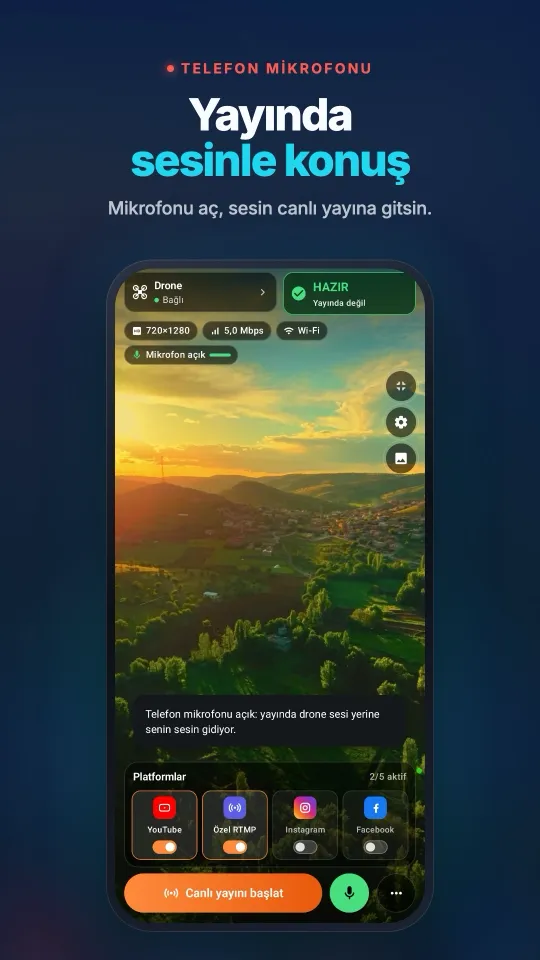

Stream My Drone mi, Restream mi: drone'unuz için hangisi?
İkisi de tek bir drone görüntüsünü birkaç platforma taşır. Restream bunu bulutta yapar: DJI Fly, Restream'in sunucularına yayın yapar, onlar da görüntüyü iletir. Stream My Drone bunu kendi bilgisayarınızda yapar: DJI Fly yerel ağınız üzerinden uygulamaya yayın yapar, uygulama da her platforma gönderir. Hangisinin daha iyi olduğu nerede uçtuğunuza ve neye para ödediğinize bağlı.
Kısaca
- Restream bir bulut servisidir: sahada bilgisayar gerekmez, tek yükleme yeter, ama temel özelliklerin ötesi için abonelik gerekir.
- Restream'in ücretsiz planı (Ekim 2026): 2 kanal, yayında Restream markası, özel RTMP hedefi yok; Standard aylık 19 $.
- Stream My Drone ücretsiz ve açık kaynaktır: filigran yok, kanal sınırı yok, görüntü kendi bilgisayarınızda kalır.
- Stream My Drone drone görüntüsünü Instagram ve TikTok için dikey 1080×1920'ye çevirir ve TikTok LIVE Studio için bir sanal kamera ekler.
- İkisini birlikte de kullanabilirsiniz: Restream'i Stream My Drone'a özel RTMP hedefi olarak ekleyin.
İki farklı yaklaşım
- Restream (bulut): DJI Fly → internet → Restream → her platform. Kumandanın internete ihtiyacı vardır; bilgisayar isteğe bağlıdır.
- Stream My Drone (yerel): DJI Fly → yerel Wi-Fi → Mac'iniz ya da bilgisayarınız → her platform. Bilgisayarın internete ihtiyacı vardır; kumandaya yalnızca yerel ağ yeter.
Karşılaştırmanın çoğunu bu tek fark açıklar: bulut, yükleme bant genişliğinizden ve bir bilgisayardan tasarruf ettirir; yerel uygulama ise aboneliği ortadan kaldırır ve görüntüyü sizin elinizde tutar.
Yan yana
| Stream My Drone | Restream | |
|---|---|---|
| Fiyat | Ücretsiz, açık kaynak | Ücretsiz plan; ücretli planlar aylık 19 $'dan (Standard) |
| Filigran | Yok | Ücretsiz planda Restream markası |
| Hedef sayısı | Yükleme hızınızın izin verdiği kadar | Ücretsizde 2, Standard'da 3, üst planlarda daha fazla |
| Özel RTMP hedefleri | Var | Ücretsiz planda yok |
| DJI Fly'dan Instagram | Evet, uygulama RTMPS gönderir | Planınızın Instagram'ı nasıl bağladığına bağlı |
| Bulanık dolgulu dikey 1080×1920 | Yerleşik | Drone'a özel bir özellik değil; yayın geldiği gibi çıkar |
| Sanal kamera (TikTok LIVE Studio, OBS, Zoom) | Yerleşik | Yok |
| Sahada bilgisayar | Gerekir (ya da Android'de Stream My Drone) | Gerekmez |
| Kullanılan yükleme | Her hedef için bir kez | Toplamda bir kez |
| Sohbet ve istatistikler | Yok | Var |
| Görüntü nereden geçer | Yalnızca hedeflerinize gider | Restream'in sunucularından geçer |
Restream planları Ekim 2026'daki fiyat sayfasından alındı ve değişebilir; karar vermeden önce güncel sayfaya bakın.
Telefonunuzda nasıl görünürDJI Fly bağlantısından birden fazla platformdaki yayına kadar her şey tek ekranda.




Restream ne zaman daha iyi?
- Bilgisayar ya da ikinci bir telefon olmadan doğrudan kumandadan yayın yapmak istiyorsanız.
- Yükleme hızınız düşükse ve çok sayıda hedefe ihtiyacınız varsa: bulut tek yüklemeyi hepsine dağıtır.
- Platformlar arası birleşik sohbet, istatistik ya da ekip özellikleri istiyorsanız.
Stream My Drone ne zaman daha iyi?
- Aylık fatura ya da yayınınızda filigran istemiyorsanız.
- Instagram veya TikTok'a yayın yapıyor ve yatay bir şerit değil düzgün bir dikey görüntü istiyorsanız.
- Yayın anahtarı olmadan, TikTok LIVE Studio ve yerleşik sanal kamera üzerinden TikTok'ta canlı yayın yapmak istiyorsanız.
- Görüntü hassassa — bir müşteri alanı, bir denetim — ve üçüncü bir taraftan geçmemesi gerekiyorsa.
- Yanınızdaki büyük bir ekranda önizleme, kayıt ve tanılama istiyorsanız.
macOS veya Windows için indirin; kurulum DJI Fly RTMP rehberinde.
İkisini birlikte kullanmak
Zaten Restream'e ödeme yapıyorsanız, dikey görüntüyü ve önizlemeyi Stream My Drone'dan alın, dağıtımı Restream'e bırakın:
- Restream'in RTMP bilgilerini kopyalayınRestream'de yayın yazılımınız için RTMP sunucu adresini ve yayın anahtarını bulun.
- Özel RTMP hedefi ekleyinStream My Drone'da bu adres ve anahtarla özel bir hedef ekleyin.
- Yayına çıkınDJI Fly'dan drone'u uygulamaya gönderin ve YAYINI BAŞLAT'a basın; Restream yayını kanallarınıza iletir.
Sorular
Stream My Drone, Restream'in ücretsiz bir alternatifi mi?
Drone yayını için evet: tek bir DJI Fly görüntüsünü ücretsiz ve filigransız olarak birkaç platforma gönderir. Bulutta değil bilgisayarınızda çalışır; bu yüzden bütün hedefleri bilgisayarın yükleme bağlantısı taşır.
Restream filigran ekliyor mu?
Ücretsiz planda Restream yayına kendi markasını ekler (Ekim 2026). Ücretli planlarda eklemez.
Stream My Drone ile Restream'i birlikte kullanabilir miyim?
Evet. Restream'i Stream My Drone'a özel RTMP hedefi olarak ekleyin.
Hangisi bilgisayarsız çalışır?
Restream, çünkü DJI Fly ona internet üzerinden doğrudan yayın yapabilir. Stream My Drone için bir bilgisayar gerekir; DJI RC 2 ile uçuyorsanız Android uygulaması Stream My Drone da olur.
Drone'unuzu telefonunuzdan canlı yayına taşıyın
Android ve iPhone için Stream My Drone, DJI Fly görüntüsünü alır ve YouTube, Instagram, Facebook, TikTok, Twitch, Kick veya kendi sunucunuza, aynı anda birden fazlasına gönderir. Tek seferlik satın alma, abonelik yok.
Ücretsiz Mac ve Windows uygulaması →Uygulama nasıl çalışır →

Diğer rehberler
DJI Flip ile canlı yayın nasıl yapılır?
DJI Flip ile RC 2, RC-N3 veya RC-N2 üzerinden canlı yayın: telefon ve bilgisayar RTMP kurulumu, avuç içi ve telefon kontrolü, dikey kadraj ve platform kontrolleri.
DJI Lito X1 ile canlı yayın nasıl yapılır?
DJI Lito X1 ile RC 2, RC-N3 veya RC-N2 üzerinden canlı yayın: DJI Fly RTMP ayarları, telefon ve bilgisayar kurulumu, platform adımları ve sorun giderme.
DJI Lito 1 ile canlı yayın nasıl yapılır?
DJI Lito 1 ile RC 2, RC-N3 veya RC-N2 üzerinden canlı yayın: DJI Fly RTMP ayarları, telefon ve bilgisayar kurulumu, platform adımları ve sorun giderme.
DJI Air 3S ile canlı yayın nasıl yapılır?
DJI Air 3S ile YouTube, Instagram veya Facebook yayını açın. Kumandayı seçin, DJI Fly RTMP görüntüsünü telefona ya da bilgisayara alın ve yayın kadrajını kontrol edin.
DJI Air 3 ile canlı yayın nasıl yapılır?
DJI Air 3 ile YouTube, Instagram veya Facebook yayını açın. Kumandayı seçin, DJI Fly RTMP görüntüsünü telefona ya da bilgisayara alın ve yayın kadrajını kontrol edin.
DJI Mavic 4 Pro ile canlı yayın nasıl yapılır?
DJI Mavic 4 Pro ve RC 2 veya RC Pro 2 ile telefona ya da bilgisayara yayın aktarın. DJI Fly RTMP, mikrofon farkları, 720p sınırı ve platform kurulumu.
DJI Mavic 3, Classic veya Pro ile canlı yayın nasıl yapılır?
DJI Mavic 3, Classic veya Pro ile RC-N1 ya da RC Pro üzerinden yayın yapın. DJI RC sınırı, ayrı telefon alıcısı, bilgisayarda RTMP ve görüntü kalitesi.
DJI Mini 3 Pro ile canlı yayın nasıl yapılır?
DJI Mini 3 Pro görüntüsünü RC-N1, telefondaki DJI Fly ve bilgisayardaki Stream My Drone ile yayınlayın. Ekranlı DJI RC'nin neden bu RTMP yolunu kullanamadığını öğrenin.
DJI Mini 3 ile canlı yayın nasıl yapılır?
DJI Mini 3 canlı yayınını RC-N1 ve DJI Fly üzerinden bilgisayardaki Stream My Drone'a kurun. DJI RC sınırını, 720p canlı görüntüyü ve platformda yayına geçişi öğrenin.
DJI Mini 5 Pro ile canlı yayın nasıl yapılır?
DJI Mini 5 Pro ile RC 2 veya RC-N3 üzerinden canlı yayın yapın. DJI Fly RTMP ayarları, telefon ve bilgisayar kurulumu, YouTube, Instagram ve Facebook adımları.
DJI Mini 4 Pro ile canlı yayın nasıl yapılır?
DJI Mini 4 Pro ile RC 2 veya RC-N2 üzerinden canlı yayın: telefon ve bilgisayar kurulumu, DJI Fly RTMP ayarları, mikrofon gereksinimi ve platform kontrolü.
DJI drone'unuzla hayvanları canlı bulun ve sayın
Stream My Drone, drone'unuzun canlı görüntüsündeki keçi, koyun, inek, at, eşek ve kümes hayvanlarını bulur, yayında işaretler ve sayar. Hepsi kendi bilgisayarınızda.
DJI Fly RTMP canlı yayın ayarları: eksiksiz kurulum
DJI Fly RTMP canlı yayın ayarları: ayar nerede, hangi adres girilir, kumanda ve bilgisayar aynı ağa nasıl bağlanır ve sorunlar nasıl çözülür.
DJI Fly neden Instagram'a canlı yayın yapamıyor? (ve çözümü)
DJI Fly'da Instagram seçeneği yok ve RTMP istemcisi Instagram'ın istediği şifreli RTMPS'i yapamıyor. Nedeni ve DJI drone ile Instagram'da yine de nasıl canlı yayın yapılır.
Drone'unuzu bilgisayarınızın harici kamerası yapın
Stream My Drone sanal kamerasıyla DJI drone'unuzu TikTok LIVE Studio, OBS, Zoom, Google Meet ve Teams için webcam olarak kullanın. Kurulum, fikirler ve çözümler.
DJI Neo ile canlı yayın nasıl yapılır?
DJI Neo ile canlı yayın: hangi kontrol modu çalışır (telefon, RC-N3, gözlük), DJI Fly'da RTMP ve Stream My Drone ile Instagram, TikTok veya YouTube'da yayın.
DJI Avata 2 ile canlı yayın nasıl yapılır?
DJI Avata 2 ile FPV canlı yayın: Goggles 3 görüntüsünü telefondaki DJI Fly'a aktarın, RTMP ile yayınlayın ve Instagram, TikTok veya YouTube'da canlıya çıkın.
DJI Osmo kameranızla Instagram, TikTok ve daha fazlasında canlı yayın
DJI Mimo, Osmo Action, Osmo Pocket ve Osmo 360 kameralarla RTMP yayını yapabilir. Bunu Stream My Drone'a gönderin, aynı anda Instagram, TikTok ve YouTube'da canlı yayına çıkın.
Osmo Pocket 3 ile Instagram ve TikTok'ta canlı yayın nasıl yapılır?
DJI Osmo Pocket 3 ile DJI Mimo'dan RTMP yayınını Stream My Drone ile aynı anda Instagram, TikTok ve YouTube'a gönderin ve kamerayı kablosuz webcam olarak kullanın.
Osmo Action kamerayla Instagram ve TikTok'ta canlı yayın nasıl yapılır?
DJI Osmo Action 6, 5 Pro, 4 veya 3 ile DJI Mimo'dan RTMP yayınını Stream My Drone ile aynı anda Instagram, TikTok, YouTube ve Twitch'e gönderin. Kurulum ve ayarlar.
DJI drone ile TikTok'ta canlı yayın nasıl yapılır
Drone ile TikTok'ta canlı yayın: DJI Fly'dan TikTok yayın anahtarıyla ya da anahtarsız, TikTok LIVE Studio ve sanal kamerayla. Ayarlar ve çözümler.
Drone ile Instagram'da canlı yayın nasıl yapılır?
Drone ile Instagram'da canlı yayın: instagram.com'dan yayın URL'si ve anahtarını alın, DJI Fly'ın RTMP yayınını Stream My Drone ile gönderin, Go live'a basın.
Drone ile YouTube'da canlı yayın nasıl yapılır?
Drone ile YouTube'da canlı yayın: canlı yayını etkinleştirin, YouTube Studio'dan yayın anahtarını alın, DJI Fly'ın RTMP yayınını Stream My Drone ile gönderin.
Drone ile Facebook'ta canlı yayın nasıl yapılır?
Drone ile Facebook'ta canlı yayın: Live Producer'dan RTMPS sunucu URL'si ve yayın anahtarını alın, DJI Fly görüntüsünü Stream My Drone ile yayına taşıyın.
Drone ile Twitch'te yayın nasıl yapılır?
Drone ile Twitch'te yayın: yayın anahtarını Twitch kontrol panelinden kopyalayın, Twitch'i Stream My Drone'a Özel RTMP hedefi olarak ekleyin ve yayına geçin.
DJI drone ile Kick'te yayın nasıl yapılır?
Drone ile Kick'te yayın: Kick panelinden yayın URL'si ve anahtarını kopyalayın, Stream My Drone'a Özel RTMP hedefi olarak ekleyin ve yayına geçin.
DJI drone ile aynı anda birden fazla platformda canlı yayın
Drone ile aynı anda birden fazla platformda canlı yayın: tek DJI yayınını TikTok, YouTube, Twitch ve Kick'e ücretsiz, restream hizmeti olmadan gönderin.
NGINX ve OBS kurmadan DJI drone ile yayın
DJI Fly'ı OBS'ye almanın bilinen yolu NGINX RTMP sunucusu, bir yapılandırma dosyası ve medya kaynağıdır. Bu kurulumun neler gerektirdiği ve tek uygulamayla nasıl atlanacağı.